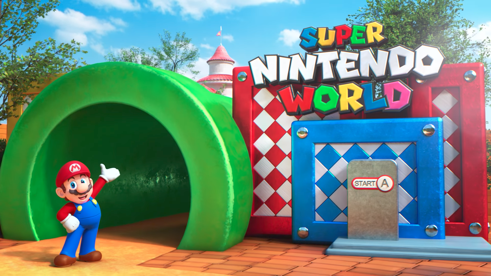
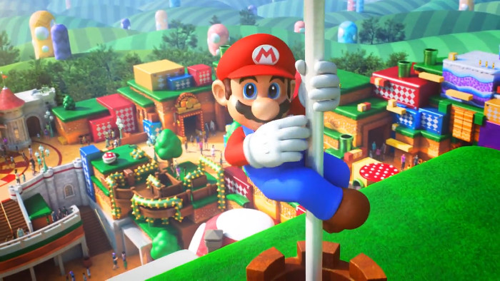
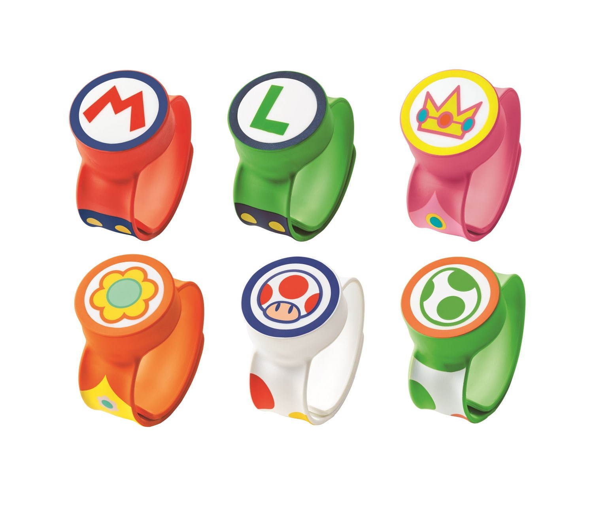

USJの新アトラクションを予想してみた
7/22 2020
カテゴリー：ブログ/テーマパーク
▲１.新エリア：｢SUPER NINTENDO WORLD｣

映像やHPを見る限り、スマホを使ってコインを集めるアトラクションになりそうです。腕に巻くバンドと、iPhoneのUSJ公式アプリを連動させて、コインを集めるアトラクションらしいですね。
発表から３年近くが経過しようとしていますが、果たしてどんなアトラクションになるのでしょうか。今から楽しみです。
▲２.｢SUPER NINTENDO WORLD｣ はCOOL JAPANとは別モノ。

混合しがちですが、｢SUPER NINTENDO WORLD｣は、あくまで『新エリア』なので、『ユニバーサル・クールジャパン』とは全くの別モノです。
わたしも初めは「USJにマリオ？また日本だけのCOOL何とか（失礼）がユニバに来るのか」と軽いスタンスで構えていたのですが、どうやらそうではないようで、公式から発表があったときにはめちゃくちゃビックリしました。
しかも、今回は本場アメリカのユニバーサルスタジオにも同様の施設が作られるようです（スゴいことです∑(ﾟДﾟ)）。
もしかしたら自分の勘違いということもあるかもしれませんが、これが本当なら日本のゲーム文化も捨てたモノじゃないなぁと思います。
▲３.今後日本にも来るかもしれない：ハグリッド「マジカルクリーチャーズ・モーターバイクアドベンチャー」

海外のユニバーサルススタジオにはあるけれど、日本にはないアトラクションは実はたくさんあります。
たしか、ノクターン横丁やグリンゴッツなんかも日本にはない施設ですよね。
でも、そういったいわゆる『建造物系』は、狭い日本の土地では設置するのが難しいと思います。
△日本にはない本場『ハリーポッター 』エリア
奥には、あのハリー達が逃したドラゴンに強襲されるグリンゴッツ銀行が・・・！

可能性は高い？？
ハグリッドの「マジカルクリーチャーズ・モーターバイクアドベンチャー」は、大掛かりすぎる設備がないので、建設は比較的やりやすいのでは？と個人的に結構期待してます。
そのうえ、ジェットコースター型のアトラクションというシンプルなコンセプトなため、海外限定で稼働しているアトラクションの中で一番日本にも輸入設置されそうなアトラクションだと個人的には思っています♪(´ε｀ )！
ただ、コロナウイルスの影響があり、おそらく来年中は新アトラクション設置はないかなぁ、なんて思ってます。 残念です。
▲4.マリオはコロナ明けにできたアトラクションとして歴史に残るアトラクションになる？（かも）

おそらく ｢SUPER NINTENDO WORLD｣ はコロナ明けにできたアトラクションとして、ニュースなどのメディアが大きく取り上げ、象徴的な存在になるのではないかと今からワクワクしてます。
▲5.｢SUPER NINTENDO WORLD｣で買えるグッズ
△腕の装着できる『パワーバンド』
このバンドと携帯アプリを連動させることで、パーク内でのアトラクションが更に楽しめます。
コインの収集状況を確認したり、お互いに競いあったりできるみたいです。
これは貸出式かと思っていたのですが、グッズとして販売するみたいですね。これもかなりビックリしました。（いい意味で）

今のところ、グッズ関連はこれしかわかっていませんが、ユニバーサルスタジオPR動画を見るに、おそらく任天堂キャラクター関連のぬいぐるみなどが販売される（かも）しれません♪( ´θ｀)ノ
▲６.Galantis×Charli XCXの豪華テーマソング
ギャランティスとチャーリー エックスシーエックスの豪華（本当にめっちゃ豪華です）アーティストによるテーマソングが公開されました。
すごい方々なので、制作に一体いくらかかったのか。考えるのはよしましょうか(￣▽￣;)恐ろしい。

ちょっと一気に話しすぎた感が否めませんが、ボクは根っからの脳天気なので明日になったら、ぼんやりまた別なことを考えていると思います。
良ければまた見にきてください。